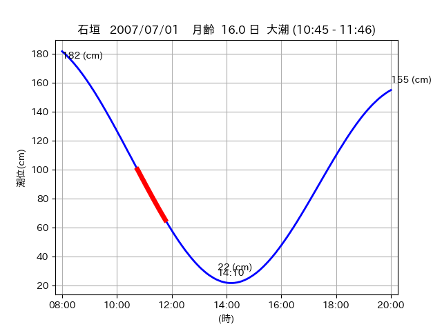

<!DOCTYPE html>
<html>
<head>
    
    <meta http-equiv="content-type" content="text/html; charset=UTF-8" />
    
        <script>
            L_NO_TOUCH = false;
            L_DISABLE_3D = false;
        </script>
    
    <style>html, body {width: 100%;height: 100%;margin: 0;padding: 0;}</style>
    <style>#map {position:absolute;top:0;bottom:0;right:0;left:0;}</style>
    <script src="https://cdn.jsdelivr.net/npm/leaflet@1.9.3/dist/leaflet.js"></script>
    <script src="https://code.jquery.com/jquery-3.7.1.min.js"></script>
    <script src="https://cdn.jsdelivr.net/npm/bootstrap@5.2.2/dist/js/bootstrap.bundle.min.js"></script>
    <script src="https://cdnjs.cloudflare.com/ajax/libs/Leaflet.awesome-markers/2.0.2/leaflet.awesome-markers.js"></script>
    <link rel="stylesheet" href="https://cdn.jsdelivr.net/npm/leaflet@1.9.3/dist/leaflet.css"/>
    <link rel="stylesheet" href="https://cdn.jsdelivr.net/npm/bootstrap@5.2.2/dist/css/bootstrap.min.css"/>
    <link rel="stylesheet" href="https://netdna.bootstrapcdn.com/bootstrap/3.0.0/css/bootstrap-glyphicons.css"/>
    <link rel="stylesheet" href="https://cdn.jsdelivr.net/npm/@fortawesome/fontawesome-free@6.2.0/css/all.min.css"/>
    <link rel="stylesheet" href="https://cdnjs.cloudflare.com/ajax/libs/Leaflet.awesome-markers/2.0.2/leaflet.awesome-markers.css"/>
    <link rel="stylesheet" href="https://cdn.jsdelivr.net/gh/python-visualization/folium/folium/templates/leaflet.awesome.rotate.min.css"/>
    
            <meta name="viewport" content="width=device-width,
                initial-scale=1.0, maximum-scale=1.0, user-scalable=no" />
            <style>
                #map_d022c9dde7f3f7b5b66772dcd76e7a0c {
                    position: relative;
                    width: 2048.0px;
                    height: 1600.0px;
                    left: 0.0%;
                    top: 0.0%;
                }
                .leaflet-container { font-size: 1rem; }
            </style>
        
</head>
<body>
    
    
            <div class="folium-map" id="map_d022c9dde7f3f7b5b66772dcd76e7a0c" ></div>
        
</body>
<script>
    
    
            var map_d022c9dde7f3f7b5b66772dcd76e7a0c = L.map(
                "map_d022c9dde7f3f7b5b66772dcd76e7a0c",
                {
                    center: [24.075, 123.778],
                    crs: L.CRS.EPSG3857,
                    ...{
  "zoom": 12,
  "zoomControl": true,
  "preferCanvas": false,
}

                }
            );

            

        
    
            var tile_layer_c3575ca2437a79fa285b452335b37be4 = L.tileLayer(
                "https://cyberjapandata.gsi.go.jp/xyz/seamlessphoto/{z}/{x}/{y}.jpg",
                {
  "minZoom": 0,
  "maxZoom": 18,
  "maxNativeZoom": 18,
  "noWrap": false,
  "attribution": "\u5730\u7406\u9662\u5730\u56f3",
  "subdomains": "abc",
  "detectRetina": false,
  "tms": false,
  "opacity": 1,
}

            );
        
    
            tile_layer_c3575ca2437a79fa285b452335b37be4.addTo(map_d022c9dde7f3f7b5b66772dcd76e7a0c);
        
    
            var marker_07b7a427d58022c54baf25ab8f695dc6 = L.marker(
                [24.0727, 123.7552],
                {
}
            ).addTo(map_d022c9dde7f3f7b5b66772dcd76e7a0c);
        
    
            var icon_27b851df6e7bc2bbe0a21b8637cc7e8a = L.AwesomeMarkers.icon(
                {
  "markerColor": "blue",
  "iconColor": "white",
  "icon": "info-sign",
  "prefix": "glyphicon",
  "extraClasses": "fa-rotate-0",
}
            );
        
    
        var popup_ff812e9f8ecdc9d1442bc42aada4bbdb = L.popup({
  "maxWidth": "100%",
});

        
            
                var html_0b9f6e4b3c44697e1e173151168495be = $(`<div id="html_0b9f6e4b3c44697e1e173151168495be" style="width: 100.0%; height: 100.0%;"><table><tr><td></td></tr><tr><td><center>20070701 No.1 </center></table></td></tr></table</div>`)[0];
                popup_ff812e9f8ecdc9d1442bc42aada4bbdb.setContent(html_0b9f6e4b3c44697e1e173151168495be);
            
        

        marker_07b7a427d58022c54baf25ab8f695dc6.bindPopup(popup_ff812e9f8ecdc9d1442bc42aada4bbdb)
        ;

        
    
    
                marker_07b7a427d58022c54baf25ab8f695dc6.setIcon(icon_27b851df6e7bc2bbe0a21b8637cc7e8a);
            
    
            var marker_c6df59b00aa7821225c6faee36c1f53e = L.marker(
                [24.0494, 123.744],
                {
}
            ).addTo(map_d022c9dde7f3f7b5b66772dcd76e7a0c);
        
    
            var icon_2127e431e00facd2cc330ef910ed2417 = L.AwesomeMarkers.icon(
                {
  "markerColor": "orange",
  "iconColor": "white",
  "icon": "info-sign",
  "prefix": "glyphicon",
  "extraClasses": "fa-rotate-0",
}
            );
        
    
        var popup_fe899be098c69cf7891dfa6cea66a7be = L.popup({
  "maxWidth": "100%",
});

        
            
                var html_5b5614df40a33873bb273325ee93bd0e = $(`<div id="html_5b5614df40a33873bb273325ee93bd0e" style="width: 100.0%; height: 100.0%;"><table><tr><td></td></tr><tr><td><center>20070701 No.2 </center></table></td></tr></table</div>`)[0];
                popup_fe899be098c69cf7891dfa6cea66a7be.setContent(html_5b5614df40a33873bb273325ee93bd0e);
            
        

        marker_c6df59b00aa7821225c6faee36c1f53e.bindPopup(popup_fe899be098c69cf7891dfa6cea66a7be)
        ;

        
    
    
                marker_c6df59b00aa7821225c6faee36c1f53e.setIcon(icon_2127e431e00facd2cc330ef910ed2417);
            
    
            var poly_line_b8cd597f0fbe400168ed1305c2c88719 = L.polyline(
                [[24.0494, 123.744], [24.0463, 123.7475]],
                {"bubblingMouseEvents": true, "color": "#00FFFF", "dashArray": null, "dashOffset": null, "fill": false, "fillColor": "#00FFFF", "fillOpacity": 0.2, "fillRule": "evenodd", "lineCap": "round", "lineJoin": "round", "noClip": false, "opacity": 1.0, "smoothFactor": 1.0, "stroke": true, "weight": 3}
            ).addTo(map_d022c9dde7f3f7b5b66772dcd76e7a0c);
        
    
            var marker_ec683f02dca6adc4aeac0d80fcc30ae5 = L.marker(
                [24.0745, 123.773],
                {
}
            ).addTo(map_d022c9dde7f3f7b5b66772dcd76e7a0c);
        
    
            var icon_2d97cb45f7e40ad1765f2bdc19e9c0bc = L.AwesomeMarkers.icon(
                {
  "markerColor": "orange",
  "iconColor": "white",
  "icon": "info-sign",
  "prefix": "glyphicon",
  "extraClasses": "fa-rotate-0",
}
            );
        
    
        var popup_6e5284be8c01776a061805cfdf9a2678 = L.popup({
  "maxWidth": "100%",
});

        
            
                var html_fa5601128b5603ed23839982f5d7c0b9 = $(`<div id="html_fa5601128b5603ed23839982f5d7c0b9" style="width: 100.0%; height: 100.0%;"><table><tr><td></td></tr><tr><td><center>20070701 No.3 </center></table></td></tr></table</div>`)[0];
                popup_6e5284be8c01776a061805cfdf9a2678.setContent(html_fa5601128b5603ed23839982f5d7c0b9);
            
        

        marker_ec683f02dca6adc4aeac0d80fcc30ae5.bindPopup(popup_6e5284be8c01776a061805cfdf9a2678)
        ;

        
    
    
                marker_ec683f02dca6adc4aeac0d80fcc30ae5.setIcon(icon_2d97cb45f7e40ad1765f2bdc19e9c0bc);
            
    
            var poly_line_572195f602b88312cc94956a542a4c7e = L.polyline(
                [[24.0745, 123.773], [24.0748, 123.7838]],
                {"bubblingMouseEvents": true, "color": "#FF00FF", "dashArray": null, "dashOffset": null, "fill": false, "fillColor": "#FF00FF", "fillOpacity": 0.2, "fillRule": "evenodd", "lineCap": "round", "lineJoin": "round", "noClip": false, "opacity": 1.0, "smoothFactor": 1.0, "stroke": true, "weight": 3}
            ).addTo(map_d022c9dde7f3f7b5b66772dcd76e7a0c);
        
</script>
</html>